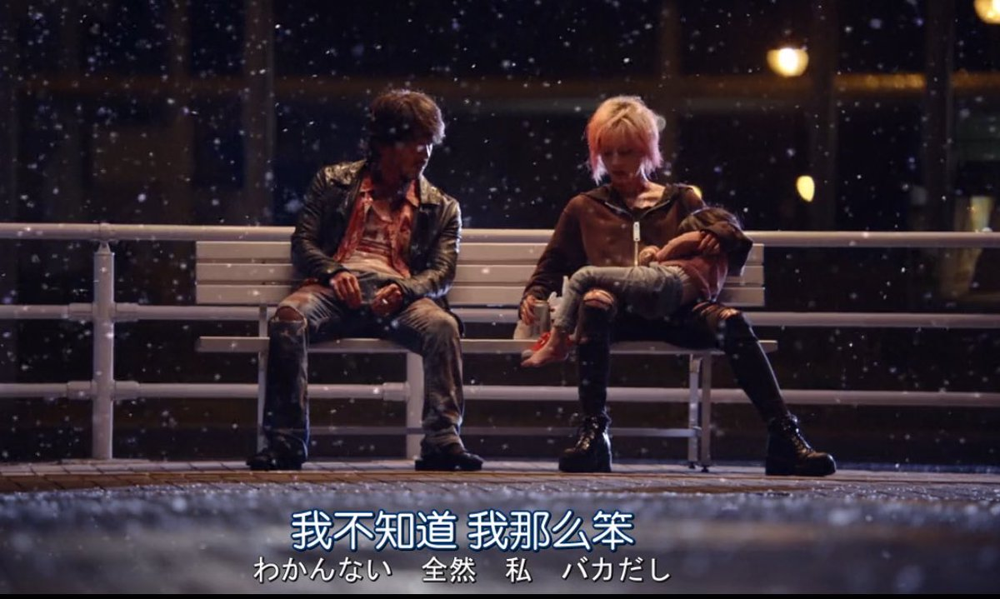

绿老头
@lu_tou20445
@shrnyygu114514 唯一不能理解的就是最后他俩好好的坐在那说他还是个孩子，因为这个圣母心导致来帮忙的都出事了

好吃麻辣烫大王
@shrnyygu114514
《来了》中岛哲也
是应该拿给对孩子生而不养的父母看的电影。
作为带有灵异元素的恐怖片，可以把人拍得比鬼还恐怖可以说很厉害了，不过这样其实也是写实
以及能在保证连贯的同时让某一幕画面也拥有着静态美，是我很喜欢电影的一点。 https://t.co/ZbhwczOlid